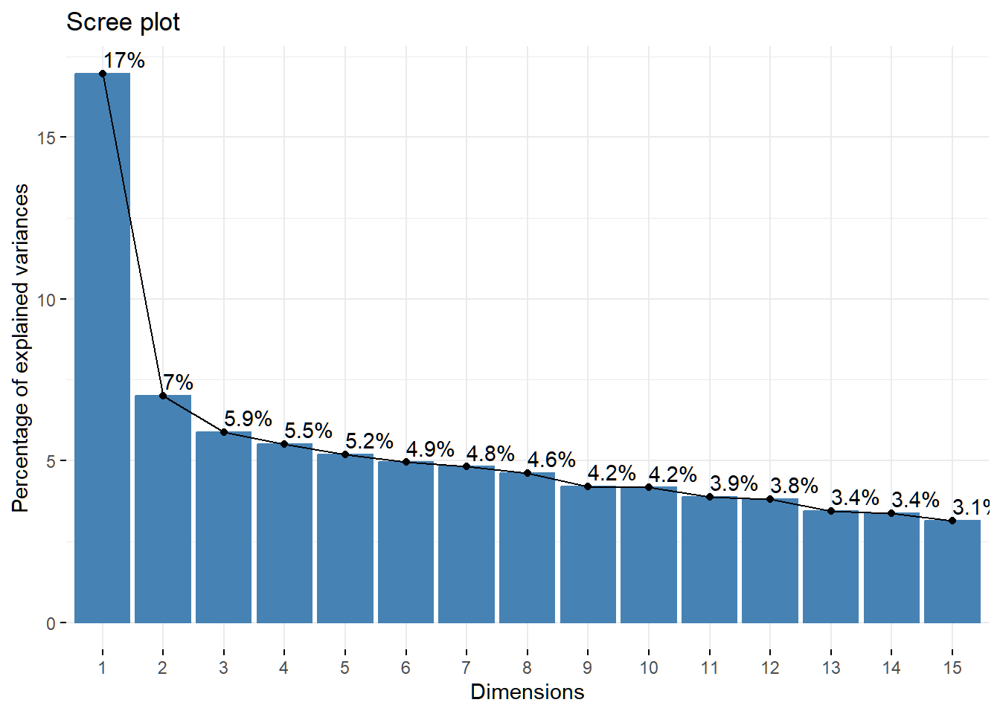

suppressPackageStartupMessages(library(tidyverse))
library(FactoMineR)
library(factoextra)
library(corrplot)
library(psych)Motivaciones Virgen de la Puerta-factoMineR
Principal Components Analysis - PCA
#Load the data
otuzco <- read_csv2("data/Motivaciones_Virgen_de_Otuzco_short_UTF8.csv")
summary(otuzco) 1.1.Vive en Otuzco 2.1.Paz 2.2.Grandeza 2.3.Consuelo
Min. :2 Min. :2.000 Min. :3.000 Min. :3.000
1st Qu.:2 1st Qu.:4.000 1st Qu.:4.000 1st Qu.:4.000
Median :2 Median :5.000 Median :5.000 Median :5.000
Mean :2 Mean :4.466 Mean :4.591 Mean :4.359
3rd Qu.:2 3rd Qu.:5.000 3rd Qu.:5.000 3rd Qu.:5.000
Max. :2 Max. :5.000 Max. :5.000 Max. :5.000
2.4.Belleza 2.5.Misterio 2.6.Tradición 2.7.Fiesta 2.8.Sitios
Min. :2.000 Min. :1.00 Min. :1.000 Min. :1.000 Min. :1.000
1st Qu.:4.000 1st Qu.:3.00 1st Qu.:3.000 1st Qu.:3.000 1st Qu.:3.000
Median :5.000 Median :4.00 Median :4.000 Median :4.000 Median :4.000
Mean :4.398 Mean :3.99 Mean :3.682 Mean :3.732 Mean :3.909
3rd Qu.:5.000 3rd Qu.:5.00 3rd Qu.:4.250 3rd Qu.:5.000 3rd Qu.:5.000
Max. :5.000 Max. :5.00 Max. :5.000 Max. :5.000 Max. :5.000
2.9.Compartir 2.10.Curiosidad 2.11.Conocer 2.12.Vacaciones 2.13.Acompañar
Min. :1.00 Min. :1.000 Min. :1.000 Min. :1.000 Min. :1.000
1st Qu.:3.00 1st Qu.:2.000 1st Qu.:3.000 1st Qu.:2.000 1st Qu.:4.000
Median :3.00 Median :2.000 Median :4.000 Median :3.000 Median :5.000
Mean :3.49 Mean :2.385 Mean :4.049 Mean :3.133 Mean :4.294
3rd Qu.:4.00 3rd Qu.:3.000 3rd Qu.:5.000 3rd Qu.:4.000 3rd Qu.:5.000
Max. :5.00 Max. :5.000 Max. :5.000 Max. :5.000 Max. :5.000
2.14.Escapar 2.15.Estrés 2.16.Aburrimiento 2.17.Fe
Min. :1.000 Min. :1.000 Min. :1.000 Min. :1.000
1st Qu.:2.000 1st Qu.:2.000 1st Qu.:1.000 1st Qu.:4.000
Median :2.000 Median :3.000 Median :2.000 Median :4.000
Mean :2.661 Mean :2.875 Mean :2.276 Mean :4.286
3rd Qu.:3.000 3rd Qu.:4.000 3rd Qu.:3.000 3rd Qu.:5.000
Max. :5.000 Max. :5.000 Max. :5.000 Max. :5.000
2.18.Atmósfera 2.19.Cumplir deseo 2.20.Respeto 2.21.Redención
Min. :2.000 Min. :1.000 Min. :2.000 Min. :1.000
1st Qu.:4.000 1st Qu.:3.000 1st Qu.:4.000 1st Qu.:2.000
Median :4.000 Median :4.000 Median :5.000 Median :3.000
Mean :4.193 Mean :3.891 Mean :4.638 Mean :3.151
3rd Qu.:5.000 3rd Qu.:5.000 3rd Qu.:5.000 3rd Qu.:4.000
Max. :5.000 Max. :5.000 Max. :5.000 Max. :5.000
2.22.Artículos 2.23.Productos 3.1.Satisfaccion 4.1.Volver
Min. :1.00 Min. :1.000 Min. :1.000 Min. :2.000
1st Qu.:3.00 1st Qu.:3.000 1st Qu.:5.000 1st Qu.:5.000
Median :3.00 Median :3.000 Median :5.000 Median :5.000
Mean :3.51 Mean :3.549 Mean :4.849 Mean :4.898
3rd Qu.:4.00 3rd Qu.:4.000 3rd Qu.:5.000 3rd Qu.:5.000
Max. :5.00 Max. :5.000 Max. :5.000 Max. :5.000
4.2.Recomendar 4.3.Positivo 5. Nacionalidad 6.Sexo
Min. :2.000 Min. :4.000 Min. :1 Min. :1.000
1st Qu.:5.000 1st Qu.:5.000 1st Qu.:1 1st Qu.:1.000
Median :5.000 Median :5.000 Median :1 Median :2.000
Mean :4.935 Mean :4.956 Mean :1 Mean :1.602
3rd Qu.:5.000 3rd Qu.:5.000 3rd Qu.:1 3rd Qu.:2.000
Max. :5.000 Max. :5.000 Max. :1 Max. :2.000
7.Estado Civil 8.Edad 9.Formación 10.Profesión
Min. :1.000 Min. :1.000 Min. :1.000 Min. :1.000
1st Qu.:1.000 1st Qu.:2.000 1st Qu.:2.000 1st Qu.:3.000
Median :1.000 Median :3.000 Median :3.000 Median :4.000
Mean :1.565 Mean :3.286 Mean :2.503 Mean :4.755
3rd Qu.:2.000 3rd Qu.:4.000 3rd Qu.:3.000 3rd Qu.:8.000
Max. :3.000 Max. :6.000 Max. :6.000 Max. :8.000
11.Con quien 12.Veces 13.Gasto 14.Ingresos
Min. :1.000 Min. :1.000 Min. :1.000 Min. :1.00
1st Qu.:2.000 1st Qu.:3.000 1st Qu.:3.000 1st Qu.:1.00
Median :2.000 Median :4.000 Median :4.000 Median :2.00
Mean :2.312 Mean :3.367 Mean :4.039 Mean :2.26
3rd Qu.:3.000 3rd Qu.:4.000 3rd Qu.:5.000 3rd Qu.:3.00
Max. :6.000 Max. :4.000 Max. :6.000 Max. :5.00 res <- PCA(otuzco[, 2:23]) # This is a listsummary(res)
Call:
PCA(X = otuzco[, 2:23])
Eigenvalues
Dim.1 Dim.2 Dim.3 Dim.4 Dim.5 Dim.6 Dim.7
Variance 4.041 1.682 1.392 1.300 1.222 1.188 1.132
% of var. 18.367 7.646 6.326 5.908 5.552 5.399 5.145
Cumulative % of var. 18.367 26.014 32.340 38.248 43.801 49.200 54.345
Dim.8 Dim.9 Dim.10 Dim.11 Dim.12 Dim.13 Dim.14
Variance 1.095 0.955 0.919 0.852 0.809 0.755 0.741
% of var. 4.977 4.343 4.178 3.873 3.679 3.434 3.367
Cumulative % of var. 59.323 63.666 67.844 71.716 75.395 78.828 82.196
Dim.15 Dim.16 Dim.17 Dim.18 Dim.19 Dim.20 Dim.21
Variance 0.661 0.607 0.555 0.518 0.443 0.439 0.357
% of var. 3.002 2.757 2.522 2.352 2.013 1.996 1.625
Cumulative % of var. 85.198 87.955 90.477 92.829 94.842 96.838 98.463
Dim.22
Variance 0.338
% of var. 1.537
Cumulative % of var. 100.000
Individuals (the 10 first)
Dist Dim.1 ctr cos2 Dim.2 ctr cos2
1 | 5.740 | 4.973 1.594 0.751 | 0.311 0.015 0.003 |
2 | 4.981 | -2.679 0.462 0.289 | 1.929 0.576 0.150 |
3 | 4.968 | -1.885 0.229 0.144 | 0.034 0.000 0.000 |
4 | 4.194 | -2.254 0.327 0.289 | 1.161 0.209 0.077 |
5 | 4.176 | -1.631 0.171 0.153 | 1.460 0.330 0.122 |
6 | 3.809 | -0.564 0.020 0.022 | -0.381 0.022 0.010 |
7 | 4.104 | -0.168 0.002 0.002 | -0.163 0.004 0.002 |
8 | 3.652 | -1.811 0.211 0.246 | -0.525 0.043 0.021 |
9 | 4.352 | -0.782 0.039 0.032 | -0.705 0.077 0.026 |
10 | 4.963 | -0.353 0.008 0.005 | 0.572 0.051 0.013 |
Dim.3 ctr cos2
1 -1.159 0.251 0.041 |
2 1.512 0.427 0.092 |
3 2.440 1.114 0.241 |
4 -0.265 0.013 0.004 |
5 1.014 0.192 0.059 |
6 1.475 0.407 0.150 |
7 0.331 0.020 0.006 |
8 -2.092 0.819 0.328 |
9 -2.267 0.962 0.271 |
10 -0.834 0.130 0.028 |
Variables (the 10 first)
Dim.1 ctr cos2 Dim.2 ctr cos2 Dim.3
2.1.Paz | 0.326 2.623 0.106 | 0.157 1.457 0.025 | 0.373
2.2.Grandeza | 0.197 0.964 0.039 | 0.056 0.188 0.003 | 0.033
2.3.Consuelo | 0.378 3.540 0.143 | -0.419 10.429 0.175 | 0.199
2.4.Belleza | 0.345 2.945 0.119 | 0.078 0.357 0.006 | 0.436
2.5.Misterio | 0.259 1.666 0.067 | 0.432 11.117 0.187 | 0.288
2.6.Tradición | 0.454 5.096 0.206 | 0.154 1.407 0.024 | -0.110
2.7.Fiesta | 0.357 3.158 0.128 | 0.149 1.319 0.022 | -0.205
2.8.Sitios | 0.282 1.975 0.080 | 0.689 28.195 0.474 | -0.031
2.9.Compartir | 0.346 2.958 0.120 | 0.308 5.626 0.095 | 0.214
2.10.Curiosidad | 0.685 11.627 0.470 | 0.230 3.157 0.053 | 0.009
ctr cos2
2.1.Paz 10.009 0.139 |
2.2.Grandeza 0.077 0.001 |
2.3.Consuelo 2.857 0.040 |
2.4.Belleza 13.635 0.190 |
2.5.Misterio 5.945 0.083 |
2.6.Tradición 0.865 0.012 |
2.7.Fiesta 3.011 0.042 |
2.8.Sitios 0.067 0.001 |
2.9.Compartir 3.277 0.046 |
2.10.Curiosidad 0.005 0.000 |#Run the PCA with supplementary variables
res <- PCA(otuzco, quanti.sup = 24:37)summary(res, rbelements = Inf)
Call:
PCA(X = otuzco, quanti.sup = 24:37)
Eigenvalues
Dim.1 Dim.2 Dim.3 Dim.4 Dim.5 Dim.6 Dim.7
Variance 4.073 1.683 1.409 1.322 1.247 1.188 1.155
% of var. 16.970 7.011 5.872 5.508 5.196 4.949 4.812
Cumulative % of var. 16.970 23.981 29.853 35.361 40.556 45.505 50.317
Dim.8 Dim.9 Dim.10 Dim.11 Dim.12 Dim.13 Dim.14
Variance 1.107 1.009 1.000 0.932 0.914 0.827 0.809
% of var. 4.611 4.204 4.167 3.885 3.810 3.444 3.370
Cumulative % of var. 54.928 59.132 63.299 67.184 70.994 74.438 77.808
Dim.15 Dim.16 Dim.17 Dim.18 Dim.19 Dim.20 Dim.21
Variance 0.753 0.725 0.661 0.576 0.554 0.505 0.443
% of var. 3.138 3.021 2.752 2.402 2.307 2.105 1.845
Cumulative % of var. 80.946 83.967 86.719 89.121 91.427 93.532 95.377
Dim.22 Dim.23 Dim.24
Variance 0.426 0.357 0.327
% of var. 1.774 1.487 1.362
Cumulative % of var. 97.151 98.638 100.000
Individuals (the 10 first)
Dist Dim.1 ctr cos2 Dim.2 ctr cos2
1 | 5.933 | 4.831 1.492 0.663 | 0.356 0.020 0.004 |
2 | 5.202 | -2.787 0.497 0.287 | 1.963 0.596 0.142 |
3 | 5.073 | -1.912 0.234 0.142 | 0.059 0.001 0.000 |
4 | 4.318 | -2.261 0.327 0.274 | 1.155 0.207 0.072 |
5 | 4.300 | -1.643 0.173 0.146 | 1.458 0.329 0.115 |
6 | 3.945 | -0.589 0.022 0.022 | -0.368 0.021 0.009 |
7 | 4.231 | -0.191 0.002 0.002 | -0.157 0.004 0.001 |
8 | 3.794 | -1.822 0.212 0.231 | -0.533 0.044 0.020 |
9 | 4.471 | -0.804 0.041 0.032 | -0.706 0.077 0.025 |
10 | 5.068 | -0.378 0.009 0.006 | 0.582 0.052 0.013 |
Dim.3 ctr cos2
1 -0.601 0.067 0.010 |
2 1.756 0.569 0.114 |
3 2.593 1.242 0.261 |
4 -0.154 0.004 0.001 |
5 0.823 0.125 0.037 |
6 1.430 0.378 0.131 |
7 0.373 0.026 0.008 |
8 -1.851 0.633 0.238 |
9 -1.995 0.736 0.199 |
10 -0.460 0.039 0.008 |
Variables (the 10 first)
Dim.1 ctr cos2 Dim.2 ctr cos2 Dim.3
1.1.Vive en Otuzco | 0.000 0.000 0.000 | 0.000 0.000 0.000 | 0.000
2.1.Paz | 0.323 2.554 0.104 | 0.160 1.517 0.026 | 0.345
2.2.Grandeza | 0.202 1.001 0.041 | 0.052 0.159 0.003 | -0.084
2.3.Consuelo | 0.375 3.447 0.140 | -0.415 10.260 0.173 | 0.189
2.4.Belleza | 0.342 2.867 0.117 | 0.081 0.394 0.007 | 0.427
2.5.Misterio | 0.258 1.638 0.067 | 0.434 11.212 0.189 | 0.255
2.6.Tradición | 0.448 4.926 0.201 | 0.158 1.487 0.025 | -0.038
2.7.Fiesta | 0.357 3.124 0.127 | 0.150 1.331 0.022 | -0.160
2.8.Sitios | 0.280 1.925 0.078 | 0.689 28.234 0.475 | -0.047
2.9.Compartir | 0.345 2.918 0.119 | 0.308 5.638 0.095 | 0.154
ctr cos2
1.1.Vive en Otuzco 0.000 0.000 |
2.1.Paz 8.422 0.119 |
2.2.Grandeza 0.500 0.007 |
2.3.Consuelo 2.546 0.036 |
2.4.Belleza 12.939 0.182 |
2.5.Misterio 4.601 0.065 |
2.6.Tradición 0.104 0.001 |
2.7.Fiesta 1.818 0.026 |
2.8.Sitios 0.157 0.002 |
2.9.Compartir 1.675 0.024 |
Supplementary continuous variables (the 10 first)
Dim.1 cos2 Dim.2 cos2 Dim.3 cos2
2.23.Productos | 0.474 0.225 | -0.285 0.081 | 0.062 0.004 |
3.1.Satisfaccion | -0.120 0.015 | 0.104 0.011 | 0.091 0.008 |
4.1.Volver | -0.273 0.074 | -0.042 0.002 | 0.068 0.005 |
4.2.Recomendar | -0.148 0.022 | -0.032 0.001 | 0.094 0.009 |
4.3.Positivo | -0.094 0.009 | -0.039 0.002 | 0.083 0.007 |
5. Nacionalidad | 0.000 0.000 | 0.000 0.000 | 0.000 0.000 |
6.Sexo | -0.074 0.006 | -0.004 0.000 | 0.055 0.003 |
7.Estado Civil | 0.093 0.009 | -0.075 0.006 | -0.021 0.000 |
8.Edad | 0.171 0.029 | -0.029 0.001 | -0.137 0.019 |
9.Formación | 0.054 0.003 | -0.143 0.021 | 0.002 0.000 |# Description of the dimensions
dimdesc(res)$Dim.1
Link between the variable and the continuous variables (R-square)
=================================================================================
correlation p.value
<NA> NA NA
<NA> NA NA
2.16.Aburrimiento 0.7579571 7.082048e-73
2.14.Escapar 0.7057747 3.764775e-59
2.10.Curiosidad 0.6905030 1.088073e-55
2.15.Estrés 0.6296789 8.313505e-44
2.21.Redención 0.5512132 6.678257e-32
2.23.Productos 0.4739820 6.670621e-23
2.6.Tradición 0.4479226 2.395436e-20
2.18.Atmósfera 0.4185904 1.010314e-17
2.22.Artículos 0.4134343 2.754388e-17
2.19.Cumplir deseo 0.3867407 3.785491e-15
2.3.Consuelo 0.3747047 3.023638e-14
2.7.Fiesta 0.3566703 5.812026e-13
2.9.Compartir 0.3447307 3.720981e-12
2.4.Belleza 0.3417334 5.858195e-12
2.1.Paz 0.3225062 9.609871e-11
2.20.Respeto 0.3084050 6.619100e-10
2.17.Fe 0.2980683 2.555896e-09
2.8.Sitios 0.2800359 2.381260e-08
2.5.Misterio 0.2582564 2.873147e-07
14.Ingresos 0.2053365 5.036707e-05
2.2.Grandeza 0.2019260 6.743742e-05
8.Edad 0.1705034 7.940040e-04
3.1.Satisfaccion -0.1204499 1.821419e-02
2.13.Acompañar -0.1448011 4.465486e-03
4.2.Recomendar -0.1481394 3.619696e-03
4.1.Volver -0.2726442 5.683683e-08
2.11.Conocer -0.2890026 8.004933e-09
$Dim.2
Link between the variable and the continuous variables (R-square)
=================================================================================
correlation p.value
<NA> NA NA
<NA> NA NA
2.8.Sitios 0.6892443 2.052656e-55
2.12.Vacaciones 0.5411163 1.369027e-30
2.5.Misterio 0.4343400 4.233559e-19
2.9.Compartir 0.3079873 6.997698e-10
2.10.Curiosidad 0.2285692 6.055141e-06
2.1.Paz 0.1597466 1.687372e-03
2.6.Tradición 0.1581998 1.873607e-03
2.11.Conocer 0.1524400 2.744577e-03
2.7.Fiesta 0.1496452 3.288013e-03
2.13.Acompañar 0.1199637 1.869116e-02
2.17.Fe 0.1100168 3.113070e-02
3.1.Satisfaccion 0.1035343 4.259209e-02
10.Profesión 0.1033233 4.301821e-02
9.Formación -0.1434276 4.862482e-03
2.21.Redención -0.1445951 4.523097e-03
2.14.Escapar -0.1679338 9.545871e-04
2.20.Respeto -0.2000149 7.925258e-05
2.15.Estrés -0.2101719 3.302378e-05
2.19.Cumplir deseo -0.2208057 1.260808e-05
2.23.Productos -0.2852760 1.265183e-08
2.22.Artículos -0.2985643 2.398338e-09
2.3.Consuelo -0.4154913 1.849932e-17
$Dim.3
Link between the variable and the continuous variables (R-square)
=================================================================================
correlation p.value
<NA> NA NA
<NA> NA NA
2.20.Respeto 0.5804970 5.709837e-36
2.4.Belleza 0.4270332 1.883051e-18
2.1.Paz 0.3445304 3.836187e-12
2.17.Fe 0.2655568 1.277817e-07
2.5.Misterio 0.2546588 4.245057e-07
2.18.Atmósfera 0.2494647 7.381607e-07
2.3.Consuelo 0.1894307 1.885919e-04
2.11.Conocer 0.1872622 2.239829e-04
2.9.Compartir 0.1536427 2.536947e-03
2.21.Redención -0.1297476 1.092778e-02
8.Edad -0.1374701 6.978048e-03
2.7.Fiesta -0.1600664 1.651046e-03
2.16.Aburrimiento -0.2248211 8.655786e-06
2.14.Escapar -0.2433631 1.392156e-06
14.Ingresos -0.2847942 1.341670e-08
2.12.Vacaciones -0.2866564 1.068699e-08
2.15.Estrés -0.3754834 2.650152e-14dimdesc(res, proba = 0.2)$Dim.1
Link between the variable and the continuous variables (R-square)
=================================================================================
correlation p.value
<NA> NA NA
<NA> NA NA
2.16.Aburrimiento 0.75795712 7.082048e-73
2.14.Escapar 0.70577474 3.764775e-59
2.10.Curiosidad 0.69050297 1.088073e-55
2.15.Estrés 0.62967885 8.313505e-44
2.21.Redención 0.55121317 6.678257e-32
2.23.Productos 0.47398199 6.670621e-23
2.6.Tradición 0.44792256 2.395436e-20
2.18.Atmósfera 0.41859038 1.010314e-17
2.22.Artículos 0.41343426 2.754388e-17
2.19.Cumplir deseo 0.38674068 3.785491e-15
2.3.Consuelo 0.37470472 3.023638e-14
2.7.Fiesta 0.35667031 5.812026e-13
2.9.Compartir 0.34473073 3.720981e-12
2.4.Belleza 0.34173340 5.858195e-12
2.1.Paz 0.32250617 9.609871e-11
2.20.Respeto 0.30840499 6.619100e-10
2.17.Fe 0.29806829 2.555896e-09
2.8.Sitios 0.28003589 2.381260e-08
2.5.Misterio 0.25825643 2.873147e-07
14.Ingresos 0.20533646 5.036707e-05
2.2.Grandeza 0.20192596 6.743742e-05
8.Edad 0.17050342 7.940040e-04
7.Estado Civil 0.09282137 6.923023e-02
10.Profesión -0.06978988 1.723150e-01
6.Sexo -0.07441325 1.455418e-01
4.3.Positivo -0.09381513 6.629077e-02
3.1.Satisfaccion -0.12044993 1.821419e-02
2.13.Acompañar -0.14480105 4.465486e-03
4.2.Recomendar -0.14813937 3.619696e-03
4.1.Volver -0.27264416 5.683683e-08
2.11.Conocer -0.28900256 8.004933e-09
$Dim.2
Link between the variable and the continuous variables (R-square)
=================================================================================
correlation p.value
<NA> NA NA
<NA> NA NA
2.8.Sitios 0.68924431 2.052656e-55
2.12.Vacaciones 0.54111628 1.369027e-30
2.5.Misterio 0.43434001 4.233559e-19
2.9.Compartir 0.30798732 6.997698e-10
2.10.Curiosidad 0.22856920 6.055141e-06
2.1.Paz 0.15974656 1.687372e-03
2.6.Tradición 0.15819984 1.873607e-03
2.11.Conocer 0.15244000 2.744577e-03
2.7.Fiesta 0.14964523 3.288013e-03
2.13.Acompañar 0.11996373 1.869116e-02
2.17.Fe 0.11001678 3.113070e-02
3.1.Satisfaccion 0.10353433 4.259209e-02
10.Profesión 0.10332331 4.301821e-02
2.4.Belleza 0.08145446 1.110211e-01
12.Veces 0.06832960 1.814910e-01
7.Estado Civil -0.07549488 1.397624e-01
9.Formación -0.14342758 4.862482e-03
2.21.Redención -0.14459506 4.523097e-03
2.14.Escapar -0.16793381 9.545871e-04
2.20.Respeto -0.20001488 7.925258e-05
2.15.Estrés -0.21017189 3.302378e-05
2.19.Cumplir deseo -0.22080566 1.260808e-05
2.23.Productos -0.28527600 1.265183e-08
2.22.Artículos -0.29856434 2.398338e-09
2.3.Consuelo -0.41549128 1.849932e-17
$Dim.3
Link between the variable and the continuous variables (R-square)
=================================================================================
correlation p.value
<NA> NA NA
<NA> NA NA
2.20.Respeto 0.58049696 5.709837e-36
2.4.Belleza 0.42703324 1.883051e-18
2.1.Paz 0.34453036 3.836187e-12
2.17.Fe 0.26555684 1.277817e-07
2.5.Misterio 0.25465876 4.245057e-07
2.18.Atmósfera 0.24946465 7.381607e-07
2.3.Consuelo 0.18943067 1.885919e-04
2.11.Conocer 0.18726218 2.239829e-04
2.9.Compartir 0.15364274 2.536947e-03
4.2.Recomendar 0.09427567 6.496371e-02
3.1.Satisfaccion 0.09109932 7.457585e-02
4.3.Positivo 0.08260919 1.060318e-01
2.19.Cumplir deseo 0.07653707 1.343617e-01
4.1.Volver 0.06793904 1.840054e-01
2.22.Artículos 0.06719837 1.888440e-01
2.2.Grandeza -0.08397333 1.003678e-01
2.21.Redención -0.12974755 1.092778e-02
8.Edad -0.13747008 6.978048e-03
2.7.Fiesta -0.16006639 1.651046e-03
2.16.Aburrimiento -0.22482111 8.655786e-06
2.14.Escapar -0.24336309 1.392156e-06
14.Ingresos -0.28479417 1.341670e-08
2.12.Vacaciones -0.28665636 1.068699e-08
2.15.Estrés -0.37548338 2.650152e-14plot(res, cex = 0.8, invisible = "quali", title = "Individual PCA Graph")# plot(res, cex = 0.8, habillage = "Competition")# Confidence ellipses around the categories
plotellipses(res)NULL# Graphs for dimensions 1 and 2
plot(res, choix = "ind", cex = 0.8, habillage = 13, title = "Individual PCA Graph", axes = 1:2)plot(res, choix = "var", title = "variables PCA Graph", axes = 1:2)
# Graphs for dimensions 3 and 4
plot(res, choix = "ind", cex = 0.8, habillage = 13, title = "Individual PCA Graph", axes = 3:4)plot(res, choix = "var", title = "variables PCA Graph", axes = 3:4)# Selecting individuals
plot(res, choix = "ind", cex = 0.8, habillage = 5, select = "cos2 0.7")plot(res, choix = "ind", cex = 0.8, habillage = 5, select = "contrib 15")# Select variables
plot(res, choix ="var", select = "contrib = 15")plot(res, cex = 0.8, habillage = 13, select = "cos2 0.7", title = "Motivaciones Otuzco", cex.main = 1.1, cex.axis = 0.9, shadow = TRUE, auto = "y")Explore the results
1.Top Eigenvalues
res$eig[2:23,] eigenvalue percentage of variance cumulative percentage of variance
comp 2 1.6825682 7.010701 23.98050
comp 3 1.4093784 5.872410 29.85291
comp 4 1.3218750 5.507812 35.36072
comp 5 1.2469409 5.195587 40.55631
comp 6 1.1877865 4.949111 45.50542
comp 7 1.1548240 4.811767 50.31719
comp 8 1.1066564 4.611068 54.92826
comp 9 1.0089342 4.203893 59.13215
comp 10 1.0000000 4.166667 63.29882
comp 11 0.9324847 3.885353 67.18417
comp 12 0.9142968 3.809570 70.99374
comp 13 0.8266515 3.444381 74.43812
comp 14 0.8087902 3.369959 77.80808
comp 15 0.7531607 3.138170 80.94625
comp 16 0.7249859 3.020775 83.96702
comp 17 0.6605336 2.752224 86.71925
comp 18 0.5763605 2.401502 89.12075
comp 19 0.5535620 2.306508 91.42726
comp 20 0.5051631 2.104846 93.53210
comp 21 0.4426957 1.844565 95.37667
comp 22 0.4257588 1.773995 97.15066
comp 23 0.3569380 1.487241 98.63791fviz_eig(res, addlabels = TRUE, ncp = 15) + theme_grey()2. Top individuals
Coordinates of individuals on the principal components
res$ind$coord[2:37,] Dim.1 Dim.2 Dim.3 Dim.4 Dim.5
2 -2.78727707 1.96299861 1.75557614 0.38209761 -1.33344131
3 -1.91176576 0.05864621 2.59259909 0.78926050 0.34426383
4 -2.26107307 1.15546036 -0.15385267 1.41405662 1.44834091
5 -1.64349857 1.45836596 0.82324309 -0.11338774 2.03403917
6 -0.58865577 -0.36790280 1.42955003 -0.07968204 1.38417376
7 -0.19076235 -0.15680257 0.37344319 0.59950350 2.17064219
8 -1.82209898 -0.53322850 -1.85074945 1.00464448 -0.52424971
9 -0.80448620 -0.70560363 -1.99527414 0.01690129 -2.67572760
10 -0.37809795 0.58218071 -0.45983158 0.98939823 -2.58750294
11 -2.46567938 0.40010075 -2.16692078 1.09964948 -2.08080860
12 -0.41467200 0.13328513 -1.23031693 -0.18404324 -1.32011079
13 -0.68004306 1.86056201 0.30473237 -1.25251865 -1.02165869
14 -1.39383717 2.71779595 -0.11822771 -0.59594631 -1.75061618
15 -2.68688543 2.31674046 -0.42748281 -0.44838680 1.10526215
16 0.67468835 2.16312240 0.03292682 1.19719917 0.48577000
17 -1.25565254 1.58641483 1.75392799 0.68186914 0.29066471
18 -1.15673885 2.14454672 1.01516595 -1.62810884 -1.96859709
19 -0.10685978 0.83543950 0.14294318 0.68927727 -1.26719474
20 1.22732029 -2.81330305 1.59513855 -0.67253720 1.88548555
21 -2.32307241 -1.50000323 -0.85015821 -0.47609351 0.04800537
22 -2.64538085 -1.02853715 -1.71476480 -0.70561285 0.53557728
23 -0.24017131 -1.01741127 0.81304986 0.85935926 0.74021573
24 -0.27216101 1.50496787 -0.02648090 0.86635741 1.01153211
25 -1.88996011 -0.58139963 0.66089049 -0.26898169 0.46746260
26 -0.86339736 1.76494136 0.26031987 1.05622170 -1.06127787
27 -0.35227614 0.57095764 0.38822517 0.39482824 2.17671448
28 0.90961135 0.61623171 1.64582775 -0.24207797 0.45249392
29 -1.07303932 -1.01152275 0.34337146 3.82366433 0.16074877
30 -0.25202541 -3.48204620 -0.96027277 1.25903997 -3.00032469
31 -1.93572003 -1.96200409 0.34676659 1.06980254 0.44667482
32 0.01150681 -0.61331433 0.81197413 0.32820186 -0.26473243
33 -0.14519633 -0.87036537 0.01962420 -0.53888225 -1.38705408
34 0.30447626 1.36944929 -1.19993738 2.20738216 0.21424919
35 -0.51647245 -1.61622875 -1.13866833 1.67815922 -1.45810106
36 -1.13739359 -0.88624773 -0.25606659 1.11044056 1.11903397
37 0.97023968 0.67832614 0.87198849 0.21991514 0.037094943. Top 15 Variables
res$var$coord[2:23, ] Dim.1 Dim.2 Dim.3 Dim.4 Dim.5
2.1.Paz 0.32250617 0.15974656 0.34453036 -0.14550653 0.235792742
2.2.Grandeza 0.20192596 0.05177618 -0.08397333 -0.40094018 0.406350241
2.3.Consuelo 0.37470472 -0.41549128 0.18943067 -0.24844918 -0.188304720
2.4.Belleza 0.34173340 0.08145446 0.42703324 -0.01120680 0.125626719
2.5.Misterio 0.25825643 0.43434001 0.25465876 -0.19376298 0.009618817
2.6.Tradición 0.44792256 0.15819984 -0.03820989 0.10417721 -0.260583667
2.7.Fiesta 0.35667031 0.14964523 -0.16006639 0.06876756 -0.533465676
2.8.Sitios 0.28003589 0.68924431 -0.04710572 -0.15651445 -0.176009704
2.9.Compartir 0.34473073 0.30798732 0.15364274 -0.28591038 -0.089168828
2.10.Curiosidad 0.69050297 0.22856920 -0.01412302 0.05841450 0.162692799
2.11.Conocer -0.28900256 0.15244000 0.18726218 0.35267975 0.291492978
2.12.Vacaciones -0.05394546 0.54111628 -0.28665636 0.31501328 -0.044146577
2.13.Acompañar -0.14480105 0.11996373 0.03721802 0.54196250 0.152452518
2.14.Escapar 0.70577474 -0.16793381 -0.24336309 0.18662639 0.161281057
2.15.Estrés 0.62967885 -0.21017189 -0.37548338 0.29400027 0.080955612
2.16.Aburrimiento 0.75795712 0.03557333 -0.22482111 0.09882023 0.138765120
2.17.Fe 0.29806829 0.11001678 0.26555684 0.15161954 0.399269263
2.18.Atmósfera 0.41859038 0.02712434 0.24946465 0.17736794 -0.307270868
2.19.Cumplir deseo 0.38674068 -0.22080566 0.07653707 -0.12755660 -0.213519494
2.20.Respeto 0.30840499 -0.20001488 0.58049696 0.31143384 -0.084139195
2.21.Redención 0.55121317 -0.14459506 -0.12974755 -0.03978843 0.065466788
2.22.Artículos 0.41343426 -0.29856434 0.06719837 0.07161355 -0.004488051fviz_pca_ind(res, select.ind = list(contrib = 15), axes=c(1,2), repel = T) + theme_grey()Cos2 : quality of representation of individuals on the principal components
res$ind$cos2[1:15,] Dim.1 Dim.2 Dim.3 Dim.4 Dim.5
1 0.663004047 0.0036096604 0.010247875 1.776658e-02 0.022820900
2 0.287063531 0.1423828640 0.113882522 5.394689e-03 0.065700027
3 0.142007426 0.0001336354 0.261163467 2.420374e-02 0.004604946
4 0.274193848 0.0716042188 0.001269517 1.072413e-01 0.112504556
5 0.146061312 0.1150084028 0.036648206 6.952304e-04 0.223725331
6 0.022267113 0.0086977576 0.131322707 4.080017e-04 0.123118222
7 0.002033128 0.0013736805 0.007791632 2.007996e-02 0.263242398
8 0.230670341 0.0197548866 0.237981439 7.012496e-02 0.019095201
9 0.032371074 0.0249024185 0.199124667 1.428761e-05 0.358099497
10 0.005566553 0.0131975498 0.008233325 3.811711e-02 0.260699015
11 0.194779010 0.0051287044 0.150437122 3.874159e-02 0.138718126
12 0.008217483 0.0008489708 0.072337483 1.618710e-03 0.083281811
13 0.022825640 0.1708592325 0.004583395 7.743166e-02 0.051518335
14 0.061714624 0.2346376480 0.000444020 1.128180e-02 0.097352225
15 0.315962401 0.2349047899 0.007997871 8.799191e-03 0.053464770Contribution of individuals to the principal components
res$ind$contrib[1:15,] Dim.1 Dim.2 Dim.3 Dim.4 Dim.5
1 1.492149306 0.0196642661 0.066648484 1.231962e-01 0.16775325
2 0.496753681 0.5963978818 0.569482656 2.876253e-02 0.37133912
3 0.233695403 0.0005323239 1.241972248 1.227211e-01 0.02475174
4 0.326896300 0.2066361044 0.004373723 3.939236e-01 0.43809116
5 0.172710791 0.3291767425 0.125226818 2.532857e-03 0.86405525
6 0.022156626 0.0209489518 0.377606862 1.250833e-03 0.40013276
7 0.002326838 0.0038054190 0.025768566 7.080466e-02 0.98400968
8 0.212287655 0.0440071070 0.632901930 1.988397e-01 0.05739833
9 0.041382622 0.0770579981 0.735607778 5.627532e-05 1.49522548
10 0.009140910 0.0524580005 0.039069581 1.928504e-01 1.39824925
11 0.388735334 0.0247762075 0.867615363 2.382248e-01 0.90424717
12 0.010994873 0.0027495364 0.279688857 6.672954e-03 0.36395162
13 0.029570157 0.5357774209 0.017158461 3.090628e-01 0.21798899
14 0.124223825 1.1432199654 0.002582734 6.996690e-02 0.64003654
15 0.461614145 0.8307127420 0.033765911 3.960810e-02 0.25512527Scree plot (Contributions graph)
fviz_eig(res, ncp = 15, addlabels = TRUE)
Visualize individuals and variables on the first two principal components
fviz_pca_ind(res, select.ind = list(contrib = 15), col.ind = "cos2", col.var = "contrib", repel = TRUE)Correlation circle
fviz_pca_var(res, select.var = list(contrib = 15), col.var = "cos2", repel = TRUE)